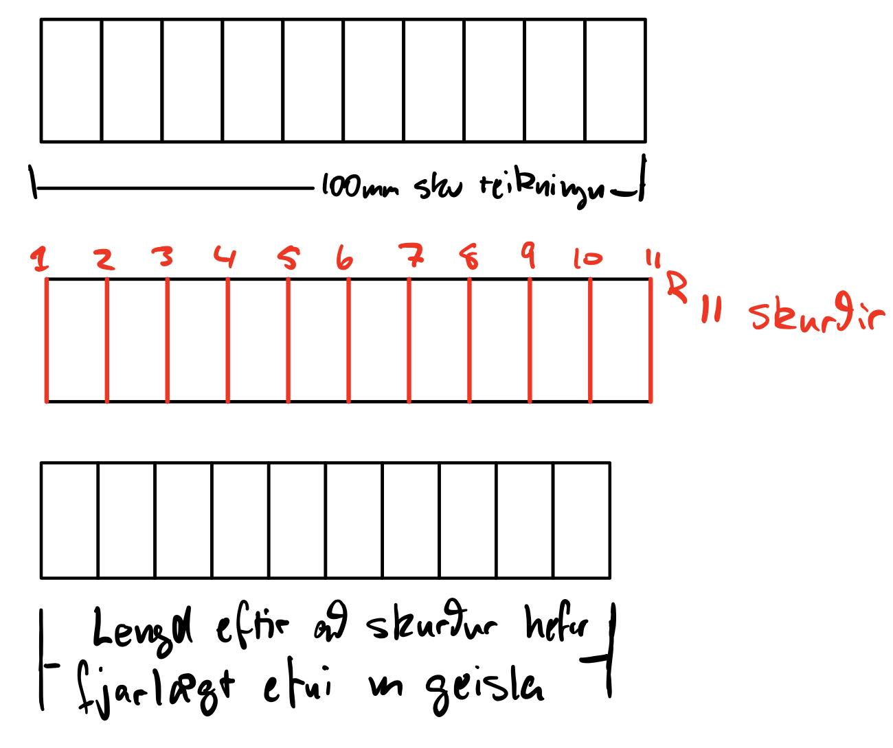
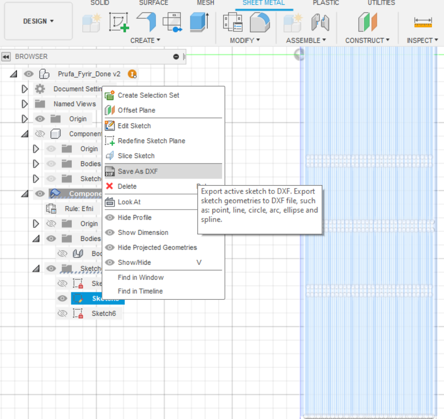
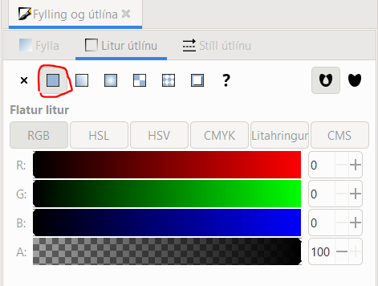

Tölvustuddur skurður
Markmið verkefnis 3 er að hanna og skera út hlut með geislaskurði. Hönnunin þarf að vera parametrísk og einhverstaðar þarf að koma fram geirnegling (pressfit) í byggingareiningum. Einnig á að nota vínylskera til þess að búa til eitthvað.
Geislaskurður
Lykil atriði og ein af skorðum verkefnisins er að búa til og hanna hlut sem er samsettur úr nokkrum byggingareiningum og er aðeins festur með geirneglingu. Ekki er leyfilegt að nota lím eða skrúfur þegar hluturinn er samsettur eftir að skurðurinn hefur verið framkvæmdur. Önnur skorða er stærð plötunnar sem við fáum, eða 50cmx50cm plata úr birkikrossvið eða akríl.
Hönnun
Ég byrjaði á að leita mér af hlutum til þess að geislaskera og áttaði mig á því að mig vantaði ljósakrónu á heimilið. Eftir stutta leit fann ég ljósakrónu sem mér fannst nokkuð flott og ákvað að búa til svipaða. Hér fyrir neðan má sjá fyrstu drögin að hönnunninni.

Hún verður sett upp af tveimur hringum sem eru með litlu extrude á hverjum fjórðung. Síðan verður “umgjörðin” flötur með living hinge sem hægt verður að geirnegla við hringina með fingurliðum. Þar sem ég ætla að hafa living hinge þarf efnið að vera eins sveigjanlegt og hægt er, því valdi ég að vinna með krossviðsplötu í stað fyrir akríl, þar sem akríllinn er mun stífari en krossviðurinn.
Byrjum á að teikna efri hringin. Hann var teiknaður upp með parametrum til þess að auðvelda ferilð og einnig auðvelda breytingar sem mun þurfa, þar sem ég teiknaði þetta aðeins út frá útliti - en ekki út frá praktík. Hér fyrir neðan má sjá fyrstu teikninguna ásamt öllum parametrum.

Hringurinn var síðan extrude'aður með efnisþyktinni sem var einnig parametruð.
Því næst var að búa til umgjörðina. Til þess fylgdi ég eftirfarandi YouTube myndbandi. Ég byrjaði á að búa til Sheet Metal Rule fyrir efnið okkar. Í rauninni þarf bara að setja upp reglu með efnisþyktinni til að sjá til að allt passi vel saman þar sem við munum skera hlutinn út frá ofanvarpi eininganna. Hafa þarf hinsvegar í huga að ekki er hægt að parametra Sheet Metal Rule.
Nú bý ég til nýjan hlut, þar sem við viljum byggingareiningarnar í sundur seinna í ferlinu, valdi sheet metal týpuna og valdi nýju Sheet Metal regluna. Ástæðan fyrir því að nota sheet metal er einfaldlega sú, að þegar hlututinn er teiknaður er hægt að varpa/breiða út úr hlutnum
Svo teiknaði ég umgjörðina á viðeigandi plan. Til þess að fá umgjörðina til þess að passa teiknaði ég radíusinn frá miðju fyrir hvorn fjórðung, teiknaði helminginn af pressfit línunni út frá því og notaði svo center point arc á milli línanna tveggja.

Því næst bjó ég til boddy með því að nota Flange skipunina.
Nú kemur eiginleiki sheet metal sem við viljum sækjast við, vörpunin. Með því að nota Unfold skipunina í Fusion360, fletjum við út boddyið sem ég bjó til áðan, og því getum við teiknað living hinge á flötinn sem beygjist.
Því næst bjó ég til nýjan sketch á græna svæðinu, afritaði geomertýu hans með Project Geometry skipuninni og faldi svo bodyið sjálft svo að ég sæji aðeins teikninguna mína.
Nú þurfti ég að teikna hjarirnar. Út frá myndbandinu hér fyrir ofan byrjaði ég að plana hvernig hjarirnar ættu að vera settar upp. Hér fyrir neðan má sjá undirbúninginn fyrir teikninguna og þar af leiðandi parametrana, ásamt parametrunum upp settum í Fusion. Hér fyrir neðan má sjá útreikningana sem fóru í að ákvarða fjölda bila út frá forákvörðuðu bili á milli ráka ásamt parametrunum upp settum í Fusion.

Til þess að getað notað Fjöldi_bila parameterinn var nauðsynlegt að velja No Unit þegar hann var búinn til. Með litlu brasi, þökk sé parametrunum, voru hjarirnar teiknaðar. Til þess að halda áfram er mikilvægt að eyða út línunum sem voru projectaðar á teikninguna ásamt hjálparlínunum fyrir bil á milli rifa hér áðan eins og sérst hér til hægri.
Þar á eftur búum við rectangular pattern til þess að fjölda framleiða þessar línur og þar af leiðandi búa til hjör. Þegar rectangular pattern hefur verið valið þarf að velja allar línurnar sem voru teiknaðar, velja Spacing í Distance Type, setja breytuna Fjöldi_bila í Quantity og svo setja Bil_m_hjara/2 í Distance. Ástæðan afhverju við þurfum að deila Bil_m_hjara með tveimur er hreinlega af því að við gerðum ráð fyrir tveimur bilum í Fjöldi_bila breytunni.
Því næst þarf að sýna body-ið aftur, velja skipunina Project og smella á body-ið. Þá hefur okkur tekist að varpa teikningunni af hjörunum yfir á body-ið.
Því næst þarf að búa til press fit hluta hjaranna. Ég miðaði einfaldlega við að hringirnir myndu festast einum cm frá toppi umgjarðarinnar. Ég endurtók öll skrefin sem lýst eru hér fyrir ofan með það í huga að búa til göt fyrir festingarnar og endaði með þetta.
Hinsvegar má sjá á myninni hér fyrir neðan, að gatið fyrir festinguna og gatið fyrir fyrsta hluta hjaranna er mjög nálægt hvor öðrum, því ákvað ég að breyta festingunni örlítið svo að allt komist fyrir án þess að veikja efnið.
Næst ákvað ég að búa til örlitla grip kló á enda hverri festingu hringsins. Sjá má hana hér fyrir neðan.
Nú þegar allt var nánast komið þurfti ég bara að breyta parametrunum svo að ég fengi nægilega fína stærð á ljósakrónu. Ég bjó til sára einfalt líkan til þess að finna út hvað ég get gert krónuna stóra út frá efninu sem við fáum (50x50 krossviðsplata), m.t.t. þvermál hringsins, ásamt lengd umgjarðarinnar. Niðurstaðan var sú að 12,5cm hringur í þvermáli ásamt 27 cm löng umgjörð hentar ágætlega. Ég breytti viðeigandi parametrum í Fusion og fékk eftirfarandi niðurstöðu. Allt leit vel mjög vel út fyrir utan hjörina. Eins og sérst á myndinni hér fyrir neðan hefur patternið ekki náð alla leið að raunverulega enda hennar. Ég sá ekki hvað gæti mögulega verið að fara úrskeiðis, en hinsvegar virkaði að bæta einum við parameterinn fyrir fjölda bila.
Undirbúningur fyrir skurð í Fusion
Kerf prófun
Áður en haldið er áfram þarf að athuga lykiatriði í velgengni geirneglingar við geislaskurð, a.k.a. Kerf prófun. Kerf er í rauninni þverskurður geislans sem skorið er með í plöunni og þar sem geislaskerinn sker meðfram ofanvarpi byggingareininganna, sjá hér neðar, þurfum við að gera ráð fyrir þverskurði geislans til að offset'a skurðinn og þ.a.l. gera hann betri. Einnig þarf að nefna að hver geislaskurður hefur mismunandi Kerf, þannig að niðurstaðan hér fyrir neðan er ekki algild fyrir öll tæki.
Ein leið til þess að framkvæma þetta próf er með því að teikna 10 litla kassa sem voru í lengdina 100mm á lengd. Síðan eru þessir kassar skornir með geislandum, raðaðir saman hlið við hlið og mældir. Síðan er lengdinni deilt með fjöld lína sem þurfti að skera, niðurstaðan er Kerfið. Myndræna útskýringu ásamt myndum af vettfangi má sjá hér fyrir neðan.


Niðurstaða kerfsins var um það bil 0.105-0.106mm. Dembum okkur nú aftur í Fusion!
Einnig bjó ég til botn festinguna með sama máta og ég gerði áður. Einnig bjó ég til þrjú eintök af umgjörðum með copy paste. Toppnum var einnig breytt til þess að vera líkari upphaflegu drögunum.
Til þess að undirbúa ferlið fyrir skurðinn þarf ég að hafa allar teikningar í sama plani. Ótrúlegt en satt á vill Fusion ekki leyfa mér að færa umgjörðina mikið til án þess að unfold-a bodyinu. Ég hélt að það yrði vesen fyrir komandi skref, en varð í rauninni ekkert mál. Ég byrjaði á að bretta upp á umgjörðina með Refold Faces skipuninni.
Síðan setti ég teikninguna af hörinni í sama plan og festingarnar með skipuninni Align.
Nú þarf bara að aðskilja alla hlutana með Move skipuninni svo þeir séu sjáanlegir. Loka niðurstaðan ætti að líta svona út.
Næst þarf að setja upp nýtt set up fyrir skurðinni. Nauðsynlegt er að færa sig út Design yfir í manufacturing og þaðan smella á Setup.
Þaðan þarf að velja Select Z axis/plane and X axis og svo smella á planið sem hringurinn myndar, þar sem hans Z-ás stefnir upp.
Í mínu tilfelli kom upp eftirfarandi villumelding, það er í lagi að hunsa hana.
Þaðan þarf að setja upp tól skurðsins, þá aðallega kerfið sem er í rauninni þverskurður geislans sem skorið verður með. Inn í fabrication þarf að velja cutting og svo 2D Profile.

Hér smellum við á Select Tool til þess að velja eða búa til kerf sem að hentar okkar geislaskurð.
Velja skal Laser Cutter, fara í Cutter flipann og skrifa niður niðurstöðu kerf prófunarinnar.
Því næst skal smella á Geometry flipann og velja öll þau plön sem að á að gera ráð fyrir í leiserskurðinum, þaðan má smella OK.
Nú þurfum við að herma geisla skurðinn með því að fylgja leiðbeiningunum hér fyrir neðan.
Þegar að ég fylgdist með hermuninni fyrir teikninguna mina tók ég eftir því að Fusion tók aðeins örlítinn hluta af hjörunum sem voru teiknaðar, sama hvað ég reyndi. Ég fór til Hafliða og bað um aðstoð. Hann benti mér á að ég þyrfti ekki að gera ráð fyrir kerfinu í hjörunum þar sem þarf í rauninni ekki að offseta geislann fyrir raufarnar, þar sem þær eru bara línur, það þarf aðeins að gera það fyrir útlínur umgjarðarinnar.
Hann benti mér einnig á að ég gæti einfaldlega búið til DXF skrá, sem við notum fyrir skurðinn, beint út frá teikningunni af rákunum og sett hana inn í Inkscape – meira um Inkscape seinna. Þ.a.l. fór ég beint í það og vistaði hana sér eins og sérst hér fyrir neðan.
Nú reyndi ég að keyra hermunina aftur, nema í þetta skipti var ég með topp-/botnfestingu ásamt aðeins einni teikningu af umgjörðinni. Planið var að framkvæma hermunina á einni umgjörð og síðan afrita og raða upp þrisvar sinnum í Inkscape. Ég valdi allt það nauðsynlega, en Fusion tók þetta ekki í mál og hunsaði hluta kassans aftur.
Því ákvað ég að búa til nýjan component og varpa teikningunni með Project beint á nýja glutinn, extrudea og undirbúa fyrir skurð.


Nú þegar ég smelti á Simulate gekk allt eins og í sögu. Til þess að fylgjast með hermuninni smelli ég á Spila takkann eins og sést hér fyrir neðan.

Ef zoomað er inn á útlínur byggingareininganna getum vð séð örlitlar og þunnar línur sem fara aðeins inn fyrir upphaflegu teikninguna. Þetta er hermunin að gera ráð fyrir kerfinu.
Eftir að hermunin hefur verið kláruð þarf að útfæra DXF skjal svo að hægt sé að skera. Byrjum á að smella á Post Proccesing.
 Hér þarf að passa upp á að velja DFX skrá og haka í Output as 2D og Only Cutting sbr. myndinni hér fyrir neðan.
Hér má ná í STEP skrá af teikningunni, hér má ná í DFX skrá af bygginngareiningunum og hér má ná í DFC skrá af raufunum.
Hér þarf að passa upp á að velja DFX skrá og haka í Output as 2D og Only Cutting sbr. myndinni hér fyrir neðan.
Hér má ná í STEP skrá af teikningunni, hér má ná í DFX skrá af bygginngareiningunum og hér má ná í DFC skrá af raufunum.
Þegar að DFX skráin hefur verið búin til erum við einu skrefi fjær því að fá einingarnar í hendurnar okkar! Nú náum við í/opnum Inkscape og búum til nýtt skjal. Með því að finna DFX skránna fyrir byggingareiningarnar og draga inn á vinnusvæðið náum við að importa gögnunum beint. Við þessa aðgerð koma upp gluggarnir hér fyrir neðan. Í fyrri glugganum þarf að velja Handvirka kvörðun og setja kvörðunarhlutfallið sem 1,0. Í seinna glugganum má haka í fyrsta punktinn og smella á Í lagi.


Inn í Inkscape er einnig mikilvægt á að skilgreina vinnurýmið okkar, sem er í raun stærð hlutarins sem við fáum að skera út. Í mínu tilfelli fékk ég 50x50cm krossviðsplötu, þannig að ég ýti á Shift+Ctrl+D og set rétt mál inn eins og sérst fyrir neðan. Ef einhverjar línur sem á að skera eru ekki innan vinnurammans mun geislaskerinn ekki bera kennsl á þær og því ekki skera þær út, því er mikilvægt að hafa þetta rétt. Hér fyrir neðan má einnig sjá uppröðun á einingunum innan vinnurammans.

Þegar skráin var sett inn í forritið komu allar línurnar í sitthvoru lagi, þ.e. það var ekki hægt að færa einingu sem heild - aðeins eina línu í einu. Til þess að laga þetta þarf að “hópa” þeim saman. Það er gert með því að velja allar þær línur sem tilheyra hverri einingu, hægri smella og velja Hópa.
Því næst dreg ég inn rákirnar sem eiga að vera á hjörunum, stilli þeim upp við útlínur umgjarðarinnar og hópa. Síðan bý ég til 3 önnur eintök og raða öllu snyrtilega innan rammans.

Nú þarf að ýta á Shift+Ctrl+F til að fá Fyllingar og útlínur flipann og fylgja eftirfarandi leiðbeiningum til þess að klára ferlið.
Nú þarf að vista þessa skrá á SVG skráarforminu. Hér má ná í SVG skrá verkefnisisns. Eina sem er eftir er að skera út einingarnar!
Síða með niðurstöðum skurðs og vínilskera verður uppfærð síðar.
{kind=link}